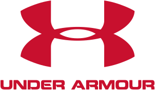
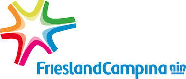

Agency-caliber work. Without the agency.
Trained at agencies building brands and websites for companies like Samsung and Unilever, Amy now works directly for startups and independent businesses. The same quality and the same craft — without the extra layers or enterprise minimums.
Trusted by




Selected Work
Samsung SmartThings
Smart home app — UX & product design
Okie Media
Brand identity & website — video production studio
Identity and site design for an award-winning video production studio whose work runs from NBC to Netflix.
WEASE
Rebrand & web design — Swedish cross-country ski brand
Full rebrand and site design for a Swedish cross-country ski startup — client workshops, market research, and a complete brand book.
Contact
Let’s build something.
Tell me a little about your project. I read every message and reply within two business days.
© 2026 &Liu